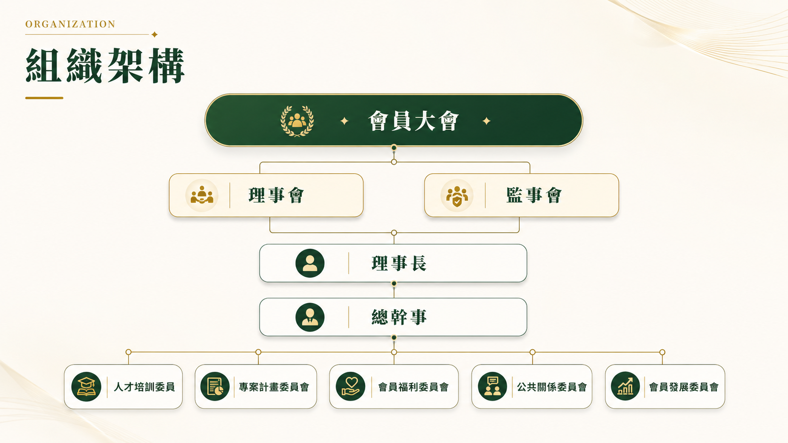

INTRODUCTION
公會簡介
彰化縣米穀商業同業公會創立於民國 39 年，係依據商業團體法組織而成的法定工商團體，以服務縣內米穀業者、維護同業合法權益、推動產業健全發展為宗旨。
公會下轄甲級會員（碾米業者）110 家、乙級會員（米穀販售業者）237 家，合計 347 家，是彰化縣農糧產業中規模最完整的行業公會之一。
近年來積極推動「彰榖米」自有品牌，整合在地優質米穀資源，並跨足米穀粉烘焙教育推廣，為在地稻米產業開創多元發展空間。現為第 29 屆，持續致力於服務會員、促進業界合作、提升彰化米穀的品牌能見度。
347
會員總數
110
甲級會員（碾米業）
237
乙級會員（販售業）
75+
服務年資
成立於民國 39 年
MISSION & PURPOSE
組織宗旨
本公會依法組織，以服務會員、推動產業健全發展、維護同業合法權益為核心使命。
維護同業權益
代表縣內米穀業者與政府機關溝通協調，傳達政策資訊，維護業者合法經營權益，確保同業在公平環境下競爭發展。
推動產業發展
整合縣內米穀資源，推動品質認證與標準化管理，以「彰榖米」品牌對外行銷，提升彰化在地稻米的市場競爭力。
教育訓練提升
持續規劃稅務、管理、食安等各類專業訓練課程，協助會員強化經營能力，跟上產業趨勢與法規要求。
品牌推廣行銷
積極推廣「彰榖米」自有品牌，舉辦食農教育活動、米穀粉烘焙推廣，讓在地好米走向更多消費市場。
業界交流合作
促進縣內米穀業者間的交流合作，凝聚產業共識，共同應對市場挑戰，推動彰化農糧產業永續發展。
會員綜合服務
提供入會協助、公告通知、議決事項傳達等行政服務，確保每位會員都能及時獲得公會資訊與資源支援。
HISTORY
成立沿革
從戰後重建到現代化農糧產業，彰化縣米穀商業同業公會走過七十五年歲月。
載入中...

基本資料
| 全名 | 彰化縣米穀商業同業公會 |
| 統一編號 | 58812408 |
| 現任屆別 | 第 29 屆 |
| 成立年份 | 民國 39 年（1950 年） |
| 會員總數 | 347 家 |
| 聯絡地址 | 500021 彰化市長壽街 194 號 |
PAST CHAIRPERSONS
歷屆理事長名單
彰化縣米穀商業同業公會自民國39年成立至今，共歷29屆理事長，帶領公會持續服務縣內米穀業者。
| 屆別 | 任期 | 理事長 | 所屬業者 |
|---|---|---|---|
| 第1屆 | 民國39～41年 | 陳反 | |
| 第2屆 | 民國41～43年 | 李俊富 | |
| 第3、4屆 | 民國43～47年 | 洪金發 | |
| 第5、6屆 | 民國47～51年 | 陳煥章 | |
| 第7屆 | 民國51～53年 | 邱思仁 | |
| 第8屆 | 民國53～55年 | 洪江林 | |
| 第9、10屆 | 民國55～59年 | 許志錕 | |
| 第11、12屆 | 民國59～65年 | 陳祥雲 | |
| 第13、14屆 | 民國65～71年 | 陳俊雄 | 壽米屋企業有限公司 |
| 第15、16屆 | 民國71～77年 | 許志錕 | |
| 第17、18屆 | 民國77～83年 | 鄭懋樵 | |
| 第19、20屆 | 民國83～89年 | 陳德風 | 陸和碾米工廠 |
| 第21、22屆 | 民國89～95年 | 柯騰雄 | 順發產業工廠 |
| 第23、24屆 | 民國95～101年 | 巫有凱 | 億興碾米工廠 |
| 第25、26屆 | 民國101～107年 | 陳樹林 | 宏達裕碾米工廠 |
| 第27、28屆 | 民國107～113年 | 沈踴志 | 金墩糧坊（股）公司 |
| 第29屆 現任 | 民國113～116年 | 蘇建彰 | 大義碾米工廠 |

COMMITTEES
各委員會主委與工作執掌
依會務推動需求設置各委員會，分工推動教育訓練、專案計畫、公共關係、會員福利與會員發展。
載入中...